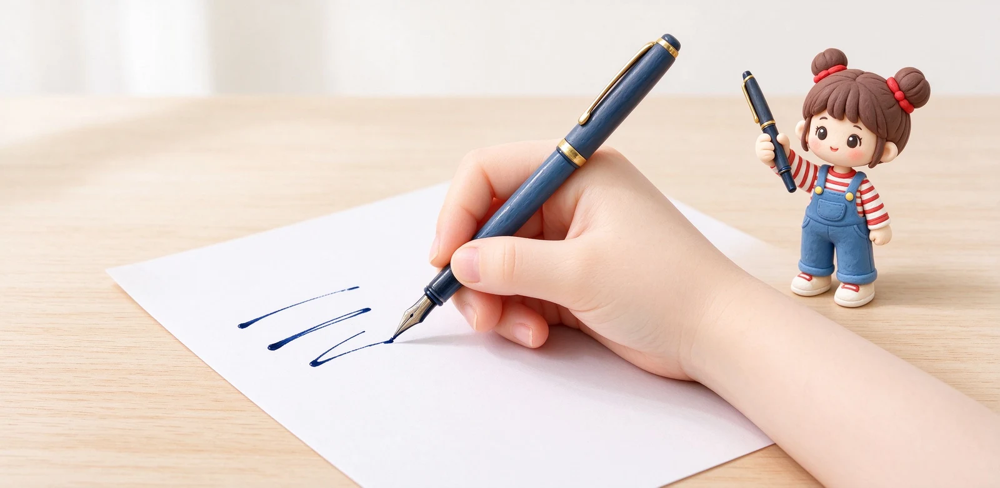

語意摘要：左撇子約占人口一成，寫鋼筆的先天麻煩是左手從左往右、手掌壓在已寫的字上，墨水沒乾就被抹開。重點不是換特製筆，而是選快乾、出墨克制的墨水，搭配 F 或 EF 細尖減少堆墨，並調整執筆角度（把手拉高、別勾腕）。多數一般日系筆照樣能寫，LAMY 甚至有左撇子專用打磨筆尖。
為什麼左撇子特別痛苦：手永遠壓在墨上
右撇子從左往右寫，手落在已經寫完、墨水也乾得差不多的區域；左撇子剛好相反，手從左邊過來，正好壓在你剛寫下、還濕的線條上。於是手背、指節就成了『擦字板』，寫完一頁手背上一圈藍黑。
再加上很多左撇子為了看得到自己寫什麼，會把手腕往上勾著寫（叫 overwriter 鉤腕），這個姿勢剛好讓筆尖以相反角度刮到紙，於是『糊』與『刮』兩個問題一起來。理解這個，解法就清楚了：讓墨快一點乾、讓筆少出一點墨、讓手別壓那麼死。
對策一：先換快乾、出墨克制的墨水
這是 CP 值最高的一步。左撇子最需要的不是貴筆，而是『寫下去幾秒就乾』的墨水。一般染料墨水性滑、乾得慢，左撇子一抹就花；選標榜快乾、出墨不氾濫的配方，手背立刻乾淨一半。
實際上玩家測試過快乾墨水，有些在普通紙上一到兩秒就乾，非常適合左撇子趕筆記。這類墨水也讓你不用刻意放慢速度等它乾。

對策二：筆尖選 F 或 EF，避開粗尖與軟尖
粗尖（M、B）一次出墨多，線條又濕又厚，正是左撇子的天敵——堆越多墨，糊得越慘。建議從日系 F（約 0.4mm）甚至 EF（約 0.3mm）開始，出墨克製、線條薄，乾得也快。
另外先避開軟彈金尖。軟尖按壓會張開、出墨更多，左撇子一勾腕就容易刮或堆墨。入門階段用偏硬、好控制的鋼尖最穩；LAMY 等品牌甚至提供左撇子（left-handed）打磨的筆尖，筆尖弧面順著左手角度，刮紙機率更低。
對策三：調整執筆，把手抬離纸面
姿勢的調整比換筆更關鍵。兩個方向試試看：一是把筆拿得比平常更直立、手腕別往上勾，讓手掌『側邊』而不是『整個手背』接觸紙；二是把紙整體往右旋轉約 30 度，讓你寫的方向比較順、手也不用那麼憋。
紙張順時針旋轉這個小動作，對很多左撇子是一翻兩瞪眼的改變——字變好寫了，手也自然不用壓那麼死。搭配前面的快乾墨水，糊手的問題通常就解決大半。
左撇子可以直接買哪幾支
其實不用找標榜『左撇子專用』的特殊筆，多數順手的日系入門筆都能用，只是要把重點放在墨水與尖粗。參考方向：
- 百樂 Kakuno（NT$380、F/M、三角筆握）：便宜好上手，配快乾卡水很適合學生。
- LAMY safari（有左撇子打磨筆尖可選）：筆握導位、筆尖順左手角度。
- 一般日系 F／EF 尖中階筆：出墨克製，換快乾墨就很好寫。
常見問題 FAQ
左撇子寫鋼筆為什麼手都髹掉？
左撇子要選哪種筆尖？
有左撇子專用的鋼筆嗎？
左撇子適合旋轉紙張寫嗎？
快乾墨水會不會比較傷筆？
資料來源與核實依據
- Smudge-Free Tips for Better Left-Hand Writing（左撇子防糊、快乾墨）（PILOT Pen Australia）
- Fast-Drying Fountain Pen Inks: Top 5（快乾墨乾燥時間比較）（Fountain Pen Revolution）
- Best Pens For Lefties - Left Handed Pens That Don't Smudge（Goldspot Pens）
- LAMY safari（提供 left-handed 筆尖、人體工學筆握）（LAMY 官方）
相關文章推薦

鋼筆新手完全指南：第一次買鋼筆前該懂的 10 件事
鋼筆不難入門，難的是第一支就買對：筆尖選 F、預算抓 300 到 800 元、先從卡式墨水管開始，九成新手不會後悔。
鋼筆筆桿粗細與重量怎麼挑？手握久不痠的選擇邏輯
寫到手痠多半不是你的手沒力，是筆沒選對：日常書寫整支抓在 15 到 22 克、筆握口徑落在 10 到 13mm，再去談重心前後，順手度差很多。

EF／F／M／B 筆尖粗細怎麼選？鋼筆字幅與書寫習慣完整對照
筆尖粗細看的是最前端那顆小銥粒：日系 F 大約 0.4mm、歐系 F 約 0.6mm，寫中文抓日系 F，寫歐系筆想細字要往 EF 抓。